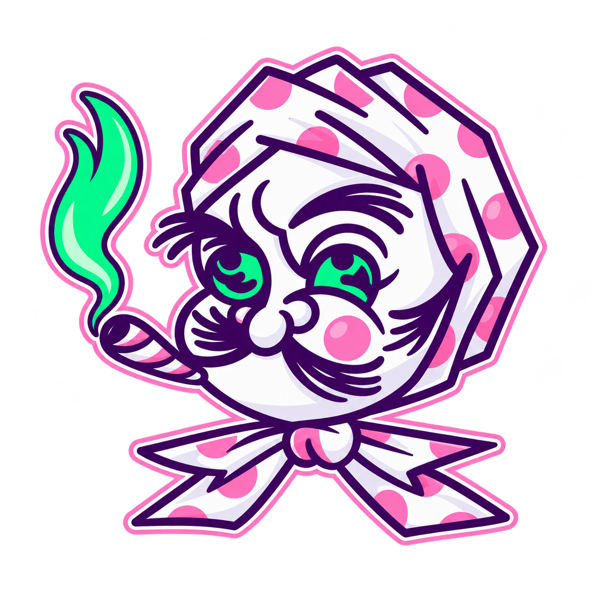

SABOR.
CONCIENCIA.
EXPERIENCIA.
Weedzard Edibles nació en una cocina al poniente de la Ciudad de México en Agosto del 2017 con una sola meta: crear un edible divertido, que te permita tener una experiencia más clara y controlada, sin sacrificar el sabor.

HECHOS
PARA VIAJAR.
El proyecto se ha ido transformando con el paso de los años buscando cumplir con lo que prometimos: un gran viaje. Consistente, medible y sin decepciones. Delicioso y discreto. Dulce, chocolatoso, neutral y por supuesto; picosito. Un edible 100% mexicano.
Todas las recetas y procesos se trabajan desde una lógica artesanal, cuidando con atención cada etapa de su preparación. sin perder de vista la importancia de un consumo consciente, informado y responsable. Hoy seguimos cocinando con el mismo amor con el que empezó todo, bajo una identidad y una experiencia en la que puedas confiar.